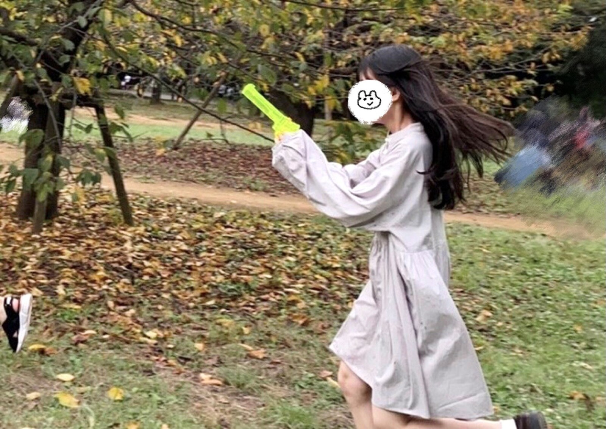

橘杏咲の立ち話もなんですから！ 第24回橘杏咲的“站着聊可说不完！” 第24回
皆さんこんにちは☂️
大家好☂️
雨の日が続いていて、もう髪の毛がくるくるでしんど…くはありません！！
连日阴雨绵绵，头发卷得让人崩溃……才怪呢!!
なぜならば縮毛矯正をかけたから！
因为我去做了缩毛矫正！
サラサラストレートで毎日快適に過ごしています。楽だ〜。
顶着一头顺滑直发，每天过得别提多舒坦了。真轻松呀〜。
会う人会う人にサラサラだねぇと言われて嬉しいです。
见到的每个人都在夸我“头发好顺滑呀”，真是太开心了。
水鉄砲かけっこをしている中学生の時のロング時代📸
附上一张初中长发时期玩水枪追逐战的照片📸

サラサラボブゥが気持ち良すぎてロング欲が一気に収束したのでまたいつか…。
滑溜溜的波波头实在太舒服了，想留长发的念头瞬间烟消云散，以后有机会再说吧……
施術時間が長くなるメニューの予約って面倒でつい後回しにしてしまって、気づいた時にはもう遅いということがよくあるのですが、今回は先月のコラムでストレートにしたい！と宣言したおかげですぐに予約する気になれました。
像这种耗时很长的美发项目，预约起来总觉得好麻烦，一不小心就往后拖，等回过神来早就错过了时机，这种事常有；不过多亏上个月在专栏里立下宣言说“好想拉直发！”，这次一下子就干劲满满地约好了。
文字に起こすとやらなければという気持ちになりますよね。
把想法写成文字，就会生出“非做不可”的责任感呢。
私がToDoリストを作るというのもこの現象に期待しての行為です。
我平时列待办清单（ToDo List），也是冲着这种心理效应去的。
基本計画を立てるのがあまり得意ではないのですが、なんだかんだ常日頃ToDoリストは作ってます。永遠にチェックできていない項目もありますけどね笑
虽然我基本上不太擅长制定计划，但说到底平日里还是会一直列待办清单。当然里面也有永远都打不上勾的项目就是了（笑）。
優先順位順で、課題やお仕事関連のものから日常の些細なことまで全て毎日書き換えてます。
从学校作业、工作相关的事务，到日常鸡毛蒜皮的小事，我每天都会按优先级全部重新整理一遍。
それこそ美容院の予約、友人の誕プレ購入みたいなことも書いて毎日のざっくりとした予定を前日の夜にメモると次の日かなり楽に過ごせている気がします。
就连预约理发店、给朋友买生日礼物这种事也会写进去，前一天晚上把第二天大致的日程记下来，总觉得第二天过起来轻松不少呢。
以前までは元から入っているメモアプリに書いていたのですが、あまりにもメモが増えすぎて使い辛く、ToDoリストを書くだけのとても単純なアプリを使い始めました。すごく良いです。おすすめです。
以前我都是直接写在手机自带的备忘录里，但笔记积攒得实在太多变得很难用，最近就换了一个纯粹只用来写待办清单的极简 App。超级好用，强烈推荐。
最近はですね、水色にハマってます。今はネイルも水色です🎶
最近呢，我迷上了水蓝色。现在连美甲都是水蓝色的🎶
秋冬は黒ばかり着ていた私ですが、最近は水色のお洋服を買いがちです。白と水色の組み合わせが爽やかで可愛くて！！ 今までデニムを履くことはあまり少なかったのですが、デニムって可愛いんだということにやっと気がつきました。
秋冬季节满身都是黑衣服的我，最近动不动就买水蓝色的衣服。白色配水蓝色又清爽又可爱!! 以前我很少穿牛仔裤，现在总算发现了“原来牛仔也这么可爱呀”。
妹もここ数ヶ月水色に塗れているので、二人で出かけると自然と水色コーデのシミラールックになってしまいます。ちなみに、可愛いです。
妹妹这几个月也是满身水蓝元素，所以姐妹俩一起出门时，不知不觉就会穿成水蓝色系的呼应姐妹装（Similar Look）。顺带一提，很可爱。
相変わらずバッグの中はピンクの小物に溢れている私ですが、いつの間にか水色の小物も増えてきました。
虽说我包里依然塞满了粉色小物，但不知不觉间，水蓝色的小物件也渐渐多起来了。
水色の小物といえば、リルアラ（Lil ala mode）のめじるしチャームのムースさん！！ 可愛すぎて！！
说到水蓝色小物，就不得不提 Lil ala mode 的标记挂件里的 Mousse（慕斯）!! 实在太可爱了!!
いつもはピンクのおリボンをつけているムースさんですが、今回の水色ビジュも可愛すぎて。ガチャじゃないグッズにもBlueシリーズが登場していて！ 水色ブーム真っ只中な私は大歓喜です。
平时的 Mousse 总是戴着粉色蝴蝶结，可这次的水蓝色造型也萌到犯规。而且非扭蛋类的常规周边也推出了 Blue 系列！正值水蓝色热潮巅峰的我简直欣喜若狂。
でもガチャガチャの人気が大爆発しすぎていてめじるしチャームを手に入れるのが大変なこと大変なこと…。
不过这弹扭蛋人气实在太爆棚了，想入手标记挂件真是难上加难、费尽周折……
しかし、リルアラさん大好きお姉さん私はいつもの豪運を発揮！！！
但是！作为超爱 Lil ala mode 的大姐姐，我再次发挥了惯例的欧皇神运!!!
無事ガチャガチャを回すことができ、お迎えすることが叶いました。
顺利扭到了扭蛋，成功把她迎回了家。
中高の友人に逐一ラインしながら大盛り上がりしてました。ほんっっっっっっっとうに嬉しかったです。
我一边事无巨细地给初高中朋友发 LINE 实况转播，一边激动得嗨翻了天。真————的太开心了。
何かに付けたいけれど勿体無くて使えない、、、また出会えますように。
好想把她挂在什么东西上，可又舍不得用……希望能再遇到这台扭蛋机呀。
水色話に戻るのですが、アイドルさんの衣装やコンセプトでも水色の好き率が高いなぁと思いました。
话再说回水蓝色，我发现连偶像们的打歌服和概念风格里，水蓝色戳中我心巴的概率也高得惊人。
特に≠MEさんの衣装が毎回ドツボで…。いやもう、日本のアイドルさんのフリフリ衣装って最高で。やっぱり可愛い女の子はフリフリを纏うべきなんです。
尤其是 ≠ME 的服装每次都精准踩在我的审美点上……哎呀，日本偶像那种层层叠叠荷叶边的服装真的太绝了。果然可爱的女孩子就该穿着蓬蓬荷叶边嘛。
衣装もMVも大好きな夏にぴったりのこの曲を聴きながら、もうひとつのお話へ行きたいと思います。
接下来就让我们一边听着这首无论服装还是 MV 我都超爱、最适合夏天的歌，一边进入下一个话题吧。
聴いてください、≠MEさんで『君はこの夏、恋をする』。
请听，≠ME 的《君はこの夏、恋をする》。
毎月のようにかわいいについて語っている私ですが、つい先日小学生の頃からあった無意識下でのかわいいに対する執着を思い出したので、今回もかわいいについて少し。
虽然我几乎每个月都在聊“可爱”，但就在前几天，我突然回想起自己打小学起就深植于潜意识里的、对“可爱”的执念，所以这回还是想稍微聊聊可爱这个话题。
以前、児童向けの文庫本を読んでいる時から可愛い女の子キャラが好きだったというお話（第19回）をしたのですが、そのことについて色々思い出しまして！
之前（第19回）我曾聊过，自己从读儿童文库本的时候起就特别喜欢可爱的女孩子角色，最近围绕那段往事又想起了好多细节！
その時に挙げていたのはらくだい魔女のフウカちゃん、ドラえもんのしずかさんとジンジャーちゃんでした。らく魔女は児童書の中で1番と言っていいほど本当に大好きな作品なのですが、キャラクターがとにかく皆魅力的なんです。お話が面白いのはもちろんのこと、キャラデザもお顔の造形もお洋服も全てが私のつぼ…。らく魔女の世界観全てが好きすぎて、真似してたくさんお絵描きしていました。
当时提到的有《留级魔女》里的风嘉，还有《哆啦A梦》里的静香和金吉尔。《留级魔女》简直算得上是我儿童书里最最喜欢的作品，里面的角色全员都超有魅力。故事本身精彩自不必说，无论是人设、脸蛋画风还是服装，全都在我的审美点上……因为太爱《留级魔女》的整个世界观了，那会儿我还照着临摹画了好多画呢。
他にも、泣いちゃいそうだよ、パセリ伝説、パスワードシリーズ、黒魔女さんが通る!!などなど、図書室にあったありとあらゆる本を読んでいました。
除此之外，《快要哭出来了》《帕西丽传说》《密码》系列、《黑魔女学园》等等，学校图书室里有的书我几乎翻了个遍。
パスワードシリーズはまどかちゃんという女の子が好きだったので、外伝の「猫耳探偵まどか」という本が1番好きでした。他にも青い鳥文庫のアンソロジー「おもしろい話が読みたい! ラブリー編」が好きで何度も読んでいたのを覚えています。
《密码》系列里我特别喜欢叫小圆（まどか）的女孩，所以最喜欢外传《猫耳侦探小圆》那本。另外我还记得自己很爱青鸟文库的选集《想读有趣的故事！甜美篇》，反反复复读了好多遍。
思い出すと見事に可愛い女の子が出ている作品しか読んでいないんですよね。食わず嫌いじゃないですけど、好みの子がいないと最初の一歩が踏み出しにくくなってしまうという習性には今でも少し困っています。スポ根漫画も読んでみたいとは思っているので…！ この間、「マネージャーが可愛いから杏咲も観れるよ！」と友人に言われたのでスポ根系もいい加減読んだり観たりしたいと思います。
回想起来，我读的竟然清一色全是有着可爱女孩子的作品呢。倒也不是挑食偏见，但要是没有合眼缘的女生，就很难迈出打开作品的第一步——这个习性到现在都让我有点困扰。毕竟我也一直想试试看热血体育漫画嘛……！前阵子听朋友说“里面的球队经理超可爱，杏咲你肯定看得下去！”，所以我打算也该抓紧去看看热血体育系作品啦。
そんな、たくさん好きな作品があった私ですが、らく魔女に次ぐ、すごく印象的だった作品を思い出しました！それが「摩訶不思議ネコ・ムスビ」という作品です！！🐈
在那么多我喜欢的作品里，我还想起了一部仅次于《留级魔女》、让我印象无比深刻的作品！那就是《不可思议的猫・结》!!🐈
細かいお話を覚えていないのが悔しいので機会があったら読み直したいのですが、可愛い女の子に釣られて読み始めたらかなり衝撃的な内容だったんです！不思議なネコちゃんと出会って、不思議な力で不思議な事件を解決していくお話しなのですがラストの展開が衝撃続きで…。
好可惜具体剧情记不太清了，有机会一定要重读一遍——当初是被可爱的女孩子钓着开始看的，结果内容居然相当震撼！讲的是遇见一只不可思议的猫咪、用不可思议的力量解决各种离奇事件的故事，可结局的展开却接连充满冲击力……
私は平坂莉々ちゃんというこれまた金髪ツインテールの子が大好きでした。好みは変わりませんね。最初こそは、りりちゃん可愛い♡で読んでましたが、すぐに作品の世界観に引き込まれてしまい、毎日夢中で読んでいました。
当时我超级喜欢名叫平坂莉莉的角色，又是一位金发双马尾女孩呢，我的喜好真是从一而终啊。最开始确实是抱着“莉莉酱好可爱♡”的心态读的，但很快就被作品的世界观深深吸引，每天都读得如痴如醉。
小学生の頃は漫画に触れる機会がなかったので永遠に児童向けの文庫本を読んでいましたが、こうして大人になった今思い出すとかなり鮮明に覚えていて、思い出すのが楽しいです。漫画のように絵は多くないので、可愛いキャラクターが大好きな私にとっては漫画という媒体の方が合っていたのかもしれませんが、数少ない挿絵を頼りに彼女たちの動きを想像しながら読んでいたあの時間が今のお仕事に生きているのかも、なんて思いました。
小学那会儿没什么机会接触漫画，就一直在没完没了地读儿童文库本；如今长大成人后再回想，居然还记得相当清楚，回忆起来真有意思。文库本不像漫画那样有那么多画面，对超爱可爱角色的我来说，或许漫画这种媒介本来更适合我，但当年仅靠寥寥几幅插画、一边在脑海里想象她们的举手投足一边阅读的时光，说不定正化作养分活在了我现在的工作里呢——我突然这样想。
なんだかノスタルジ〜な気持ちに…。よし！ではいつもの目標を。
总觉得涌起一股怀旧的思绪〜。好！那就来公布照例的目标吧。
今月の目標はズバリ
本月的目标正是——
「早起き」
《早起》
です。
就是这个。
先月に引き続きあまりにもシンプルな目標ですが、これで！！
继上个月之后又是一个简单得过头的目标，但就定它了!!
先月掲げた「3食食べる」を成立させるためには早起きしなくてはいけないということに気がつきました。あまりにも初歩的。
我突然意识到，要想让上个月立下的“一天吃三顿”成立，就必须得早起才行。这也太基础了吧。
早寝早起きして、3食食べて、運動して強くなります。
早睡早起、一天吃三顿、好好运动，我要变强。
絶対に夏にバテない！！
绝对不能苦夏!!
7月ということは、夏のアニメが始まるということ！
到了7月，就意味着夏季新番要开播啦！
私は今期『魔法少女リリカルなのは EXCEEDS Gun Blaze Vengeance』に久瀬シイナ役、『炎の闘球女 ドッジ弾子』に楠木萌愛役、そして『黒猫と魔女の教室』にユゥ・アリーズ役で出演させていただきます！猫魔女は第二クール目です！
本季我将出演《魔法少女奈叶 EXCEEDS Gun Blaze Vengeance》的久濑椎菜、《炎之斗球女 弹子》的楠木萌爱，以及《黑猫与魔女的教室》的尤·阿利兹！其中《黑猫与魔女的教室》已经进入第二季度了！
たくさんお知らせできて嬉しい…！！是非是非チェックしていただけると嬉しいです！！
能一口气带来这么多好消息真的好开心……!! 大家一定要记得追番支持哦!!
いい夏にするぞ！では！！
一定要过一个超棒的夏天！那么下次见!!
橘さんに質問！向橘小姐提问！
Q：今回『魔法少女リリカルなのは EXCEEDS Gun Blaze Vengeance』に出演するにあたって もし橘さんが魔法を使えるとしたらどんな魔法を使いたいですか？（兵庫県・勇者王ハヤテ）
问：借着这次出演《魔法少女奈叶 EXCEEDS Gun Blaze Vengeance》的机会想问一下，如果橘小姐也能使用魔法的话，你最想用什么样的魔法呢？（兵库县·勇者王ハヤテ）
勇者王ハヤテさん、ご質問ありがとうございます！
勇者王ハヤテ，感谢你的提问！
そうですね、、、やはり移動魔法でしょうか！瞬間移動したい！！時には空を飛んだっていい！！
让我想想……果然还是移动魔法吧！好想瞬间移动!! 有时候在天上飞一飞也行!!
移動時間が無くなったらやりたいことやるべきことがもっと出来るはず…！！
要是省去了通勤移动的时间，想做的事和该做的事一定都能多干好多……!!
瞬間移動できたら1日でもっといろんな場所に行って、いろんな人に出会えますよね〜！絶妙な隙間時間ができてもおうちに一瞬で帰れますし。考えれば考えるほど移動魔法が欲しくなります。逆になぜ無いんだ。無い中でみんなよくやってますよ。えらい。
要是能瞬间移动，一天之内就能去更多不同的地方、遇见更多不同的人呢〜！就算出现那种不上不下的空档时间，也能一秒瞬移回家。越想就越想要移动魔法啊。反过来说，这玩意儿怎么会没有呢？在没有移动魔法的世界里，大家平时居然还能应付得这么好，真了不起。
『魔法少女リリカルなのは EXCEEDS Gun Blaze Vengeance』いよいよ放送開始ですね！なんだかあっという間でした。放送、めちゃめちゃに緊張しますが…楽しみです。よろしくお願いします…！
《魔法少女奈叶 EXCEEDS Gun Blaze Vengeance》终于要开播了呢！总觉得一转眼就到了。虽然对正式播出超级超级紧张……但也很期待。请大家多多关照……！